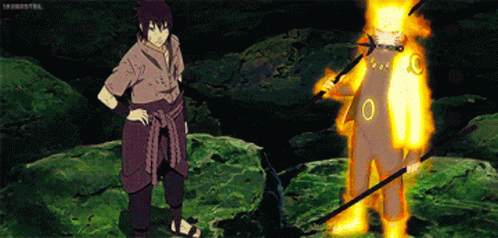

Naruto Shippuden

Naruto Shippuden acompanham a trajetória de Naruto Uzumaki, um jovem órfão da Vila da Folha que cresceu isolado por carregar a Raposa de Nove Caudas selada em seu corpo. Movido pelo sonho de se tornar Hokage para ganhar o respeito de todos, ele forma o Time 7 com Sasuke e Sakura, sob a orientação de Kakashi. A primeira fase foca no crescimento de Naruto como ninja e na partida de Sasuke da vila em busca de poder com o vilão Orochimaru. Já em Shippuden, a trama se torna mais sombria com a ameaça da organização Akatsuki, que busca capturar as bestas com caudas. Após batalhas monumentais, revelações sobre o sacrifício de Itachi e a invasão de Pain, a história culmina na Quarta Grande Guerra Ninja, onde Naruto e Sasuke unem forças para derrotar Madara e a deusa Kaguya. No fim, após um duelo decisivo entre os dois amigos, a paz é restaurada, Sasuke encontra sua redenção e Naruto finalmente realiza seu sonho, tornando-se o Sétimo Hokage e um herói lendário.
| Gênero | Ação, Aventura, Comédia, Drama, Fantasia, Shounen |
|---|---|
| Autor | Masashi Kishimoto |
| Estúdio de Animação | Pierrot |
| Data de Lançamento | 3 de outubro de 2002 |